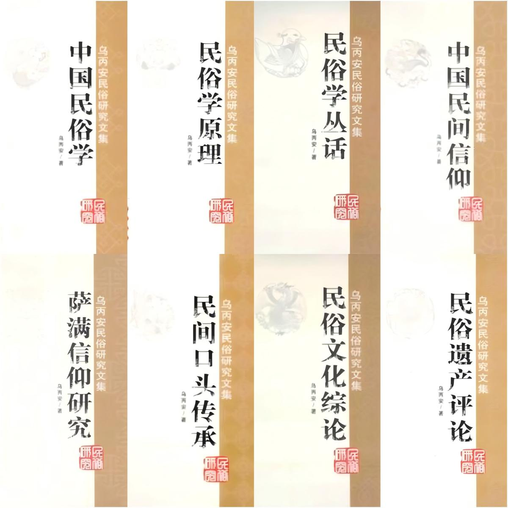

乌丙安著作介绍

乌丙安民俗研究文集
本中心收录了乌丙安先生生前发表的重要学术论文，涵盖民俗学理论、民同文学、非物质文化遍产等多个领域，集中体现了作者在民俗学研究方面的学术思想和理论贡献。《乌丙安民俗研究文集》是我国著名民俗学家乌丙安先生在民俗学、民间文学、非物质文化遗产等领域的理论、方法或与之相关专业工作实践研究上具有里程碑意义的代表性著作。全书共分八卷：第一卷《中国民俗学》，第二卷《民俗学原理》，第三卷《民俗学丛话》，第四卷《中国民间信仰》，第五卷《萨满信仰研究》，第六卷《民间口头传承》，第七卷《民俗文化综论》，第八卷《民俗遗产评论》。